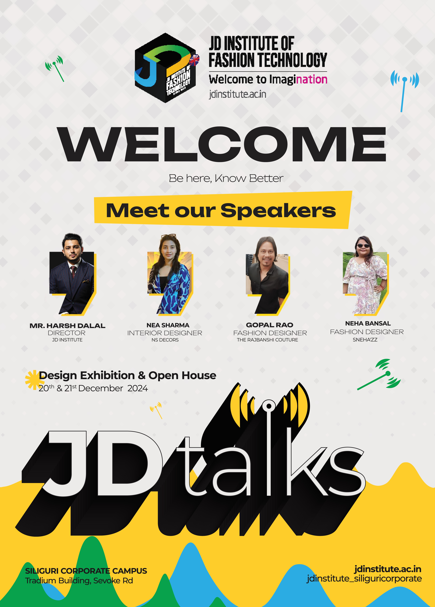

This section highlights my work in designing print and on-ground branding materials for JD Institute campuses. It includes standees, banners, signboards, certificates, event backdrops, and other collateral tailored for both corporate and franchise locations.
Each piece is designed to ensure visual consistency, brand alignment, and high-impact communication in physical spaces.

This category showcases my creative work crafted for digital platforms, including Instagram posts, stories, banners, and ad creatives. Each design aligns with specific campaign goals—ranging from event promotions and brand awareness to student engagement and franchise marketing.
The visuals are thoughtfully designed to reflect JD Institute’s brand aesthetics while ensuring clarity, appeal, and purpose-driven communication.